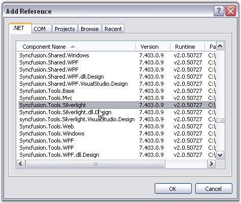

Here are the step-by-step instructions for creating a Silverlight application and deploying Tools controls in that application.
This procedure is elaborated under the following sections:
1. Creating a Silverlight Application
2. Deploying Essential Tools to the Application
Creating a Silverlight Application
1. Open Microsoft Visual Studio. Go to File menu and click New Project.

Figure 13: Creating a Silverlight Application
2. In the New Project dialog, select Silverlight Application template, name the project and click OK.

Figure 14: new project dialog
A new Silverlight application is created.
Deploying Essential Tools to the Application
1. Go to Solution Explorer. Right-click References folder and click Add Reference.

Figure 15: Solution Explorer window
2. Add the following assemblies to the project References folder.
· Syncfusion.Tools.Silverlight.dll
· Syncfusion.Shared.Silverlight.dll,
· System.Windows.Controls.dll,
· System.Windows.Controls.Data.dll

Figure 16: Add Reference
3. Add Syncfusion.Tools.Silverlight reference in XAML or C# code as follows.
|
[XAML] xmlns:Syncfusion="clr-namespace:Syncfusion.Windows.Tools.Controls;assembly=Syncfusion.Shared.Silverlight" |
|
[C#]
using Syncfusion.Windows.Tools.Controls; |
Essential Tools controls are deployed in your application.
Refer individual getting started sections of all the controls in this user's guide to know how to add those individual controls to this application.
See Also